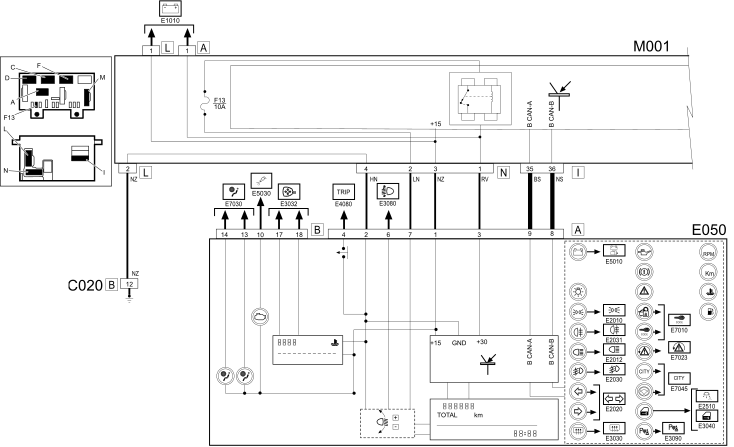
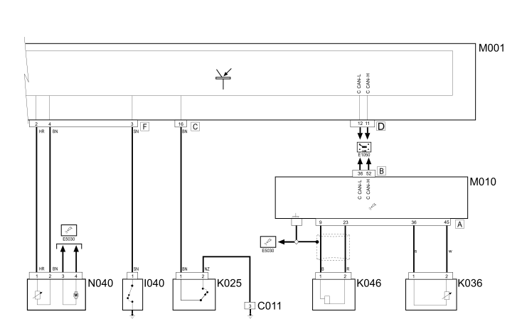

E4010 INSTRUMENT PANEL - Wiring diagram
- Path
- Electrical equipment > 1 ELECTRICAL FUNCTIONS > E40 Instrument panel > E4010 INSTRUMENT PANEL > E4010 INSTRUMENT PANEL - Wiring diagram
- Kind
- wiring diagram
- Applies to
- engines: 1.2 8v; all production periods; only with equipment: Smart gearbox
- Interactive page
- https://sloeber94.github.io/elrnDB-fPnd/en/#/2751525
Applies to: engines: 1.2 8v; all production periods; only with equipment: Smart gearbox
Wiring diagram


COMPONENTS
Component code | Name | Assembly reference |
|---|---|---|
Right front earth | - | |
Passenger side dashboard earth | - | |
Front / engine coupling | - | |
Front/engine connection | - | |
Instrument panel | ||
Handbrake "on" switch | - | |
Brake fluid level sensor (switch) | - | |
Brake fluid level sensor (switch) | ||
Brake fluid level sensor (switch) | ||
Engine coolant temperature sensor/sender unit | ||
Engine coolant temperature sensorsender unit | - | |
Engine coolant temperature sensorsender unit | ||
Engine coolant temperature sensorsender unit | ||
Rpm sensor | - | |
Rpm sensor | ||
Rpm sensor | ||
Speedometer sensor | - | |
Body computer | ||
Engine management control unit | - | |
Engine management control unit | ||
Engine management control unit | ||
ABS control unit | ||
Fuel pump and sender unit |
Topics linked from this page (21)
- 1040A fuel tank and components
- 1056B multi-point injection system (mpi)
- 1060G pressure pump electric control
- 3330C brake pump, reservoir and load proportioning valve
- 3340A abs check/adjustment devices
- 5505A multi-function components
- 5510C coil, ecu, sensors
- 5560B analogue control panel
- E50 ENGINE CONTROL AND MANAGEMENT SYSTEMS
- C011 RIGHT FRONT EARTH
- C020 PASSENGER SIDE DASHBOARD EARTH
- D004 FRONT/ENGINE COUPLING
- I040 HANDBRAKE SWITCH
- K025 BRAKE FLUID LEVEL SENSOR (SWITCH)
- K036 ENGINE COOLANT TEMPERATURE SENSOR/SENDER UNIT
- K046 RPM SENSOR
- K084 SPEEDOMETER SENSOR
- M001 BODY COMPUTER
- M010 ENGINE MANAGEMENT ECU
- M050 ABS CONTROL UNIT
- N040 FUEL PUMP AND LEVEL GAUGE